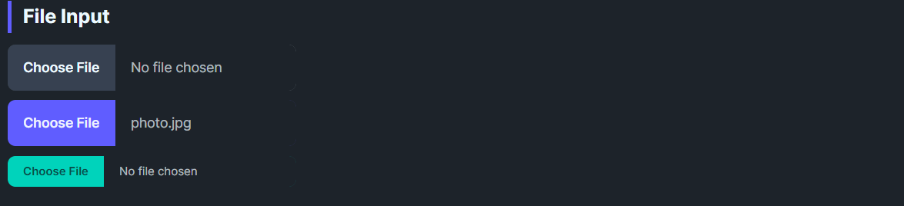

DaisyFileInput is a button-styled file selector that displays a “Choose File” affordance with the current file name beside it. It supports DaisyButton variants, size presets, and a customizable FileName placeholder. Use it when you need a themed file picker entry point; wire it up to your file dialog logic in code-behind.
| Property | Description |
|---|---|
FileName |
Text shown on the right side; default “No file chosen”. Update this after a file dialog completes. |
Variant |
DaisyButton variant for the choose-file segment (Default, Primary, Secondary, Accent). |
Size |
Height/font scaling (ExtraSmall, Small, Medium, Large, ExtraLarge - theme styles defined for XS/Small/Medium/Large). |
| Event | Description |
|---|---|
BrowseClicked |
Raised when the choose-file button is clicked. Handle this to open your file picker. |
BrowseClicked and set FileName manually.
<!-- Basic -->
<controls:DaisyFileInput />
<!-- With variant and preset filename -->
<controls:DaisyFileInput Variant="Primary" FileName="photo.jpg" />
<!-- Compact -->
<controls:DaisyFileInput Variant="Accent" Size="Small" />private async void OnPickFile(object? sender, RoutedEventArgs e)
{
var picker = new FileOpenPicker();
picker.FileTypeFilter.Add("*");
// Get the window handle for WinUI 3
var hwnd = WinRT.Interop.WindowNative.GetWindowHandle(App.MainWindow);
WinRT.Interop.InitializeWithWindow.Initialize(picker, hwnd);
var file = await picker.PickSingleFileAsync();
if (file != null)
{
FileInput.FileName = file.Name;
}
}FileName short; long paths should be truncated or replaced with the file's leaf name.DaisyAlert for upload constraints (size/type).Variant="Primary" for key upload actions; use Default/Accent for secondary forms.Button.